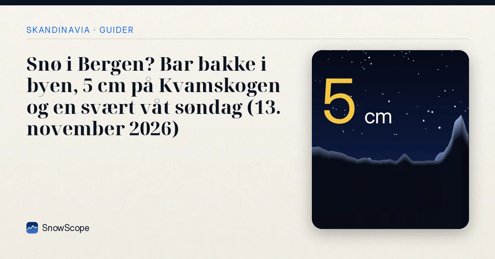

Snø i Bergen? Bar bakke i byen, 5 cm på Kvamskogen og en svært våt søndag (13. november 2026)
Bergen ligger i en regnskygge 13. november. Målestasjon ved Florida i sentrum registrerer bare mark, uendret hele uka. Likevel 35 km østover, der terrenget stiger mot platået, ligger Kvamskogen på 455 m med 5 cm snø på bakken.
Se snøprognosen for Bergen direkte i SnowScope-appenSnødybde, puddervarsler og 3D-kartet, gratis.
Snø kommer med høyden
Snøgrensen er skarp i Vestlandet i midten av november. I sjøkanten i Bergen er gresset og asfalten vått og mørkt. Klatre innland til Kvamskogen og hvitt dukker opp. På Mjølfjell, 695 m og 95 km fra byen, når dybden 10 cm. Gå videre inn i Eidfjord til Fet, på 737 m, og du finner 9 cm liggende der uberørt.
Dette vertikale mønsteret er normalt. Kalde luftmasser som bringer snø til fjellet holder seg sjelden lenge nok til å dekke lavlandet nær havet. Bergens novembersnø er kortvarig når den kommer i det hele tatt, og i år har byen ikke sett noe.

Novembersnø i Bergen: mer myte enn minne
Data fra 46 tidligere vintrer forteller historien. 13. november har Bergens sjølandnære mark båret snø i bare 15 av de 46 årene. Tynt, kortvarig dekke var vanlig: mediandybden for denne datoen er null centimeter, og selv det dypeste novembersnøen her var bare 12 cm. De siste fem vintrene – fra 2021-22 til 2025-26 – ga alle bare mark på denne eksakte datoen.
Se fremover og mønsteret holder. I halvparten av tidligere vintrer ventet Bergen til 19. desember før snø slo seg ned for sesongen. Ved midten av januar, når andre skandinaviske byer ligger under betydelig dekke, er Bergens gjennomsnittlige dybde bare 1 cm. Fjellet innland holder snø mye lenger, men byen selv er en dårlig sjanse for tidlig skisesong.
Søndag: regn dominerer værmeldingen
Lørdag starter mildt, omkring 2 til 3 °C, med 11 til 15 mm regn. Søndag intensiveres det. Værmeldingen viser 38 til 40 mm regn som temperatur svinger mellom 4 og 8 °C – varmt nok til at nedbør som faller på høyt område sannsynligvis blir regn, ikke snø. Mandag kommer ytterligere omkring 15 mm, fremdeles på mild side.
Oppe på Kvamskogen og videre virker denne tremørstrømmen mot det tynne snøet som nå ligger der. Varmt regn på grunt dekke betyr komprimering og tap, ikke vekst. Skisteder som headed mot Voss eller platåene kan vente sørpesnø på best på søndag, og bare mark på mandag morgen på sørvende bakker under 500 m.
Hva dette betyr for uka som kommer
Bergen selv forblir snøfri gjennom helgen og inn i neste uke. Fjellet vil krympe sitt dekke under regnet. For alle som håper å finne skisteder innen en dags kjøretur fra byen, er tålmodighet det eneste ærlige rådet. Mønsteret typisk for november – mildt, vått, lav snøgrense – er i full kontroll.
Ekte akkumulasjon venter vanligvis til desember i denne regionen. Når det kommer, ankommer det plutselig: en kald strøm fra nord, og hele landskapet endrer seg. For nå forblir Bergen det det har vært hele uka: en by av regn, med hvitt forbeholdt det høye området utenfor synet.
Se på tallene
Kvamskogen sin 5 cm står alene blant dalene nær Bergen. De innlandsstasjonene – Mjølfjell på 10 cm og Fet på 9 cm – representerer det beste nåværende snødekkene innen 100 km. Likevel er selv disse dybdene tynne for slutten av november. Ethvert varmere slag eller betydelig regn, som det som er varslet for søndag, vil krympe dem ytterligere.
Værmeldingen tilbyr ingen lettelse før midtuken. Etter mandagens regn dukker ingen fersk snø opp i værmeldingen gjennom 16. november. Temperaturtrend viser ingen skarp fall som kunne låse det som gjenstår. Vintersesong i Vestlandet utvikler seg sakte, som den ofte gjør.
Tips til skiløpere
- Pakk regnutstyr, ikke snøutstyr, for denne helgen. Søndagens 38 til 40 mm gjør det til en dag for innendørsaktiviteter – museer, gallerier, akvariet.
- Hvis du kjører innland mot platået, se etter sørpesnø og glatte partier over 400 m når regn-gjennomvåt snø refryser om natta. Veier som krysser Kvamskogen kan skifte fra vått asfalt til is på få minutter når høyden øker.
- Skiledere med pass på høye platåer bør inspisere sørvende bakker nøye. Tynt snø under varmt regn avslører ofte steiner og gress, spesielt under 500 m.
- Byvandrere bør passe seg på gatene og trappene: våte blader og rennende vann på bratt terreng gjør forstillingen farlig, regn eller snø.
- Tidlig puddersnø og dypt snø er ikke i værmeldingen. Hvis du jakter på frisk hvitt dekke, sjekk igjen etter neste kalde front ankommer, sannsynligvis i desember.
Om tallene
Snødybdene for skistedene er det dypeste snødekket i de øvre bakkene på datoen som vises; de er anslag for et område, ikke en måling i ett punkt. Prognoser kan endre seg. Les alltid det offisielle snøskredvarselet før du kjører utenfor preparert løype.
Siter denne rapporten
For forskning, undervisning eller presse: tallene og diagrammene kan brukes fritt under CC BY 4.0 med denne kildehenvisningen.
SnowScope (2026), Snø i Bergen? Bar bakke i byen, 5 cm på Kvamskogen og en svært våt søndag (13. november 2026), https://snowscope.app/blog/nb/2026/11/bergen-snow-today-13-november-2026.html, hentet 2026-11-13
SnowScope (Atlas Labs). (2026, November 13). Snø i Bergen? Bar bakke i byen, 5 cm på Kvamskogen og en svært våt søndag (13. november 2026). SnowScope snow reports. https://snowscope.app/blog/nb/2026/11/bergen-snow-today-13-november-2026.html
BibTeX
@misc{snowscope2026bergensnowtoday13novembe,
author = {{SnowScope (Atlas Labs)}},
title = {Snø i Bergen? Bar bakke i byen, 5 cm på Kvamskogen og en svært våt søndag (13. november 2026)},
year = {2026},
month = nov,
howpublished = {\url{https://snowscope.app/blog/nb/2026/11/bergen-snow-today-13-november-2026.html}},
note = {Published 2026-11-14 13:29 UTC; accessed 2026-11-13}
}· CC BY 4.0 · Metoder, data og verktøy →
Følg Bergen
Gratis: en melding når nysnø er på vei, og prognosen hver morgen.